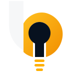

01
Ideias
Encontramos oportunidades em problemas que normalmente parecem pequenos demais para virar produto.
Buildeas Labs · Rio de Janeiro
Transformamos problemas, curiosidades e boas ideias em produtos digitais simples, úteis e capazes de funcionar no mundo real.
Nossa essência
A Buildeas é um laboratório de produtos digitais. A gente observa problemas reais, testa ideias, constrói protótipos e evolui o que demonstra valor.
Não existe tecnologia por esporte. O objetivo é transformar complexidade em experiências que façam sentido para quem usa.
01
Encontramos oportunidades em problemas que normalmente parecem pequenos demais para virar produto.
02
Transformamos conceitos em experiências claras, com foco no que a pessoa realmente precisa fazer.
03
Escolhemos tecnologia pelo problema que ela resolve, priorizando eficiência, simplicidade e custo sustentável.
04
Produto nunca termina. Medimos, aprendemos, cortamos excessos e melhoramos o que realmente importa.
Projetos
Medição, diagnóstico e recomendação para ajudar pessoas a entenderem sua conexão sem precisar falar “tecniquês”.
Conhecer projetoExperiência minimalista, rápida e visualmente integrada ao ecossistema Apple.
Produto em desenvolvimentoMotor agnóstico pensado para medir, interpretar e entregar diagnóstico para produtos, apps e operações de telecom.
Produto de plataformaComo construímos
A Buildeas trabalha em ciclos curtos: entender, decidir, construir, testar e ajustar. A documentação ajuda. O processo ajuda. Mas nenhum deles pode virar desculpa para não entregar.
Qual problema existe de verdade e para quem ele importa?
Qual é a menor solução que já consegue provar valor?
Produto real, não apresentação eterna sobre um produto futuro.
Uso, feedback e dados decidem o que evolui e o que sai fora.

Buildeas
Explore
Veja os projetos, acompanhe a evolução e conheça o código público da organização.